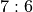
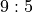
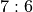
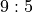

Outcome Class¶
This chapter will examine the Outcome class, and its
suitability for the game of Craps. We’ll present some additional code
samples to show a way to handle the different kinds of constructors that
this class will need.
We’ll start with Outcome Analysis to examine the different kinds of outcomes that are part of craps. This will lead us to some additional features, specifically More Complex Odds and Commission Payments.
In Fractional Odds Design we’ll look at a way to design a more sophisticated set of odds. This will include Optional Parameter Implementation Technique to show ways to handle the optional denominator, or denominator with a default value of 1.
In Outcome Rework we’ll revise the previous version Outcome
to handle Craps odds. We’ll enumerate the deliverables in Outcome Deliverables.
Outcome Analysis¶
For the game of Craps, we have to be careful to disentangle the random events
produced by the Dice objects and the outcomes on which a Player instance
creates a Bet instance. In Roulette, this relationship was simple: a
Bin object was a container of Outcome instances; a player’s Bet object
referred to one of these Outcome instances.
In Craps, however, we have one-roll outcomes, hardways outcomes, plus outcomes that aren’t resolved until the end of the game. What are the varieties of outcomes possible in Craps?
There is a rich variety of bet Outcome instances. We’ll itemize
them so that we can confirm the responsibilities for this class.
The Line Bets. These are the Pass Line, Don’t Pass Line, Come Line, Don’t Come Line. These outcomes have fixed odds of
 .
.The Hardways Bets. These are bets on 4, 6, 8 and 10 “the hard way”. These outcomes also have fixed odds which depend on the number.
The Propositions. All of these have fixed odds. These are most like the original
Outcomeused for Roulette.The Come-point Bets. These are the numbers 4, 5, 6, 8, 9 and 10. Each of these has fixed odds. Also, the initial line bet is moved to a point number from the Come Line bet, based on the number shown on the dice. We’ll examine these is some detail, below.
The Behind the Line Odds Bets. These have odds based on the point, not the outcome itself. We’ll have to look at these more closely, also.
The Placed Number Bets. These have odds are based on the number placed. These outcomes have fixed odds. Once the bet is placed, these bets are resolved when the number is rolled or when a game-losing seven is rolled.
The Buy and Lay Bets. These require a commission payment, called a vigorish, when the bet is placed. The outcomes have simple, fixed odds. As with the placed number bets, these bets are resolved when the number is rolled or when a game-losing seven is rolled.
Looking more closely at the bets with payout odds that depend on the point rolled, we note that the Come Line (and Don’t Come) odds bets are moved to a specific number when that point is established. For example, the player places a Come bet, the dice roll is a 4; the come bet is moved into the box labeled “4”. Any additional odds bet is placed in this box, also.
This leaves us with the Pass Line and Don’t Pass Line odds bet, which
also depend on the point rolled. In this case, the bets are effectively
moved to a specific numbered box. In a casino, a large, white, “on”
token in placed in the box. The effect is that same as if the house had
moved all the Pass Line bets. The odds bet, while physically behind the
Pass Line, is effectively in the box identified by the point. Again, the
bet is moved from the 1:1 Pass Line to one of the six numbered boxes;
any odds bet that is added will be on a single Outcome instance with
fixed odds.
In this case, the existing Outcome class still serves many
of our needs. Looking forward, we will have to rework the Bet class
to provide a method that will change to a different Outcome class.
This will move a line bets to one of the six numbered point boxes.
More Complex Odds¶
There are two additional responsibilities that we will need in the Outcome
class: more complex odds and a house commission. In Roulette, all odds
were stated as  , and our
, and our winAmount()
depended on that. In craps, many of the odds have non-unit denominators.
Example odds include  ,
,  , , and .
In a casino, the bets are multiples of $5, $6 or $10 to accommodate the fractions.
, , and .
In a casino, the bets are multiples of $5, $6 or $10 to accommodate the fractions.
In our simulation, we are faced with two choices for managing these more complex odds: exact fractions or approximate floating-point values.
We suggest using Python’s fractions module. We can replace the
odds with a fractions.Fraction object. We would use something
like Outcome("Something", Fraction(2,1)) for  odds.
odds.
We’ll look at the design alternatives in the Fractional Odds Design section.
Commission Payments¶
The second extension we have to consider is for the bets which have a commission when they are created: buy bets and lay bets. The buy bet involves an extra 5% placed with the bet: the player puts down $21, a $20 bet and a $1 commission. A lay bet, which is a wrong bet, involves a risk of a large amount of money against a small win, and the commission is based on the potential winning. For a 2:3 wrong bet, the commission is 5% of the outcome; the player puts down $31 to win $20 if the point is not made.
In both buy and lay cases, the player sees a price to
create a bet of a given amount. Indeed, this generalizes nicely to all
other bets. Most bets are simple and the price is the amount of the bet.
For buy bets, however, the price is 5% of the amount of the bet; for lay
bets, the price is 5% of the possible payout. The open question is the
proper allocation of responsibility for this price. Is the price related
to the Outcome class or the Bet class?
When we look at the buy and lay bets, we see that they are based on
existing point number Outcome instances and share the same odds.
However, there are three very different ways create a Bet
on one of these point number Outcome instances:
a bet on the Pass Line (or Don’t Pass Line),
a bet on the Come Line (or Don’t Come Line), and
a buy (or lay) bet on the number.
When we bet via the Pass Line or Come Line,
the Line bet was moved to the point number, and the odds bet
follows the Line bet. For this reason, the price is a feature of
creating the Bet instance. Therefore, we’ll consider the commission
as the price of creating a bet and defer it to the Bet
class design.
We observe that the slight error in the Line bet odds is the house’s edge on the Line bet. When we put an odds bet behind the line, the more correct odds dilutes this edge. When we buy a number, on the other hand, the odds are correct and the house takes the 5% commission directly instead of through improper odds. Either approach means the house always wins.
Fractional Odds Design¶
In Roulette, all outcomes paid a multiple of the bet. For example, the
“Dozen 1-12” outcome paid . We used a simple int value to show
the multiplier.
In Craps, outcomes have more complex payouts. We might see a payout
of . We can’t use a simple int value.
Problem. How do we represent more complex odds?
Forces. We have several choices.
Use a
floatvalue. This replaces exact integer values with floating-point approximations. There’s little compelling reason for this. It can lead to displaying values that look like 3.999999999999997 instead of 4.Explicit numerator and denominator. The original design for outcome had an assumed denominator of
1. It’s a small change to introduce an explicit denominator value with a default of1.Use
fractions.Fraction. This requires very little change. TheFractionclass works seamlessly with integer values, allowing us to use this with little change.
Solution. Fractions are easy to use and provide pleasant results.
Optional Parameter Implementation Technique¶
A common technique that helps to add features is to add optional parameters to a method. An optional parameter has a default value.
There’s a common confusion that can arise when using a mutable value as a default. We’ll show the immutable example first. Then we’ll show what happens when a mutable object is used.
An instance of one of the Python mutable types (lists, sets, maps) should not be provided as default values for an initializer. This is because the single initialization object – created when the class is defined – will be shared by all instances created with the default value.
class BadIdea:
def __init__(self, reqArg: Any, optList: List[Any]=[]) -> None:
initialize using reqArg and optList
We can easily create many instances of BadIdea. All of the objects
can share the single, default list object in the method definition.
Python doesn’t create a new empty list; it reuses the one list
that’s part of the definition.
To avoid this undesirable sharing of an instance of the default value, we have to do the following.
class SomeClass:
def __init__(self, reqArg: Any, optList: Optional[List[Any]]=None) -> None:
if optList is not None:
initialize using reqArg and optList
else:
default initialization reqArg and a fresh, empty []
In this case, we’ve used an immutable None as an indicator
that we should create a fresh, empty, mutable list object.
In many cases, we can optimize the initialization like this.
class SomeClass:
def __init__(self, reqArg: Any, optList: Optional[List[Any]]=None) -> None:
optList = optList or []
initialize using reqArg and optList
The or operator performs “short-circuit” evaluation. If the left-hand operand
is a true-ish value, that’s the result. If the left-hand operand is falsish
(i.e., False, 0, "", None,
[], {}, or ()) then the result is the right-hand
operand’s value.
This is a general way to add default and optional values to a
function. We can provide optional parameters of a mutable type a default
value of None.
Outcome Rework¶
We won’t change the existing attributes. We will, however, change
the use of the odds attribute from an integer to a
Fraction.
Constructors¶
We have two ways to introduce fractional odds. One is to make the numerator and denominator explicit.
-
Outcome.__init__(name, numerator: int, denominator: int=1) → None¶ - Parameters
name (string) – The name of this outcome.
numerator (int) – the payout odds numerator
denominator (int) – the payout odds denominator
Sets the name and odds from the parameters. This method will create an appropriate
Fractionfrom the given values.Example 1: 6:5 is a right bet, the player will win 6 for each 5 that is bet.
Example 2: 2:3 is a wrong bet, they player will win 2 for each 3 that is bet.
Here’s an alternative.
-
Outcome.__init__(self, name: str, odds: Union[fraction, int]) → None - Parameters
name (string) – The name of this outcome.
numerator (
fractions.Fractionor int) – the payout odds numerator
Sets the name and odds from the parameters. This method will create an appropriate
fractions.Fractionfrom the given values.If
isinstance(odds, int), create aFraction(odds, 1).If
isinstance(odds, Fraction), use the given object directly.
In earlier On Polymorphism we suggested – very strongly – that proper polymorphic class design made the
isinstance()function unnecessary. It is required, however, in a few cases to distinguish among the built-in types likeintandfractions.Fraction.
Methods¶
-
Outcome.winAmount(self, amount: int) → Fraction¶ - Parameters
amount (int) – amount of the bet
Returns the product of this Outcome object’s odds by the given amount.
The result can be a fractions.Fraction object, which will work nicely.
Note that this change will lead to a ripply of changes as mypy tries to confirm that all bet-related processing properly uses fractions.
-
Outcome.__str__(self) → str¶
An easy-to-read string output method is also very handy. This should
return a str representation of the name and the odds. A
form that looks like 1-2 Split (17:1) is the goal.
This requires decomposing the odds into numerator and denominator.
Outcome Deliverables¶
There are three deliverables for this exercise.
The revised
Outcomeclass that handles fractional odds and returns typeFractioninstances fromwinAmount().A class which performs a unit test of the
Outcomeclass. The unit test should create a couple instances ofOutcome, and establish that thewinAmount()method works correctly.A revision to each subclass of
Playerto correctly implement the revised result fromwinAmount(). Currently, there are six subclasses ofPlayer:Passenger57,SevenReds,PlayerRandom,Player1326,PlayerCancellation, andPlayerFibonacci.